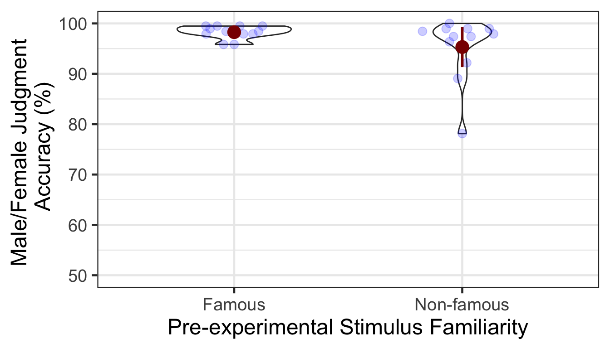
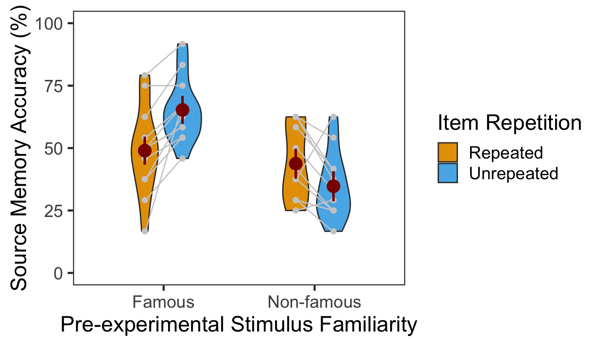
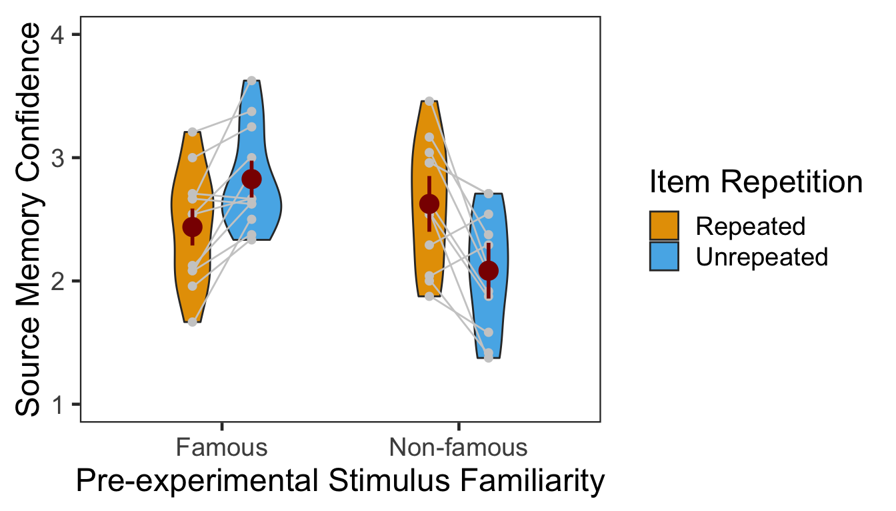
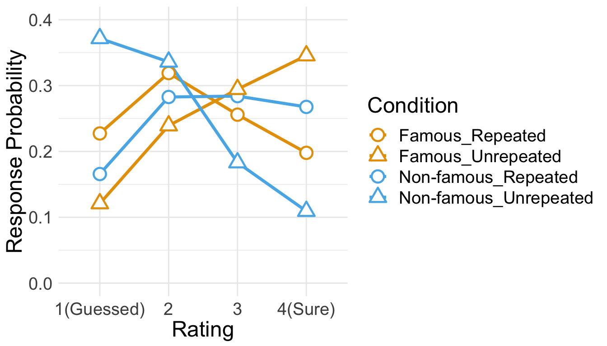
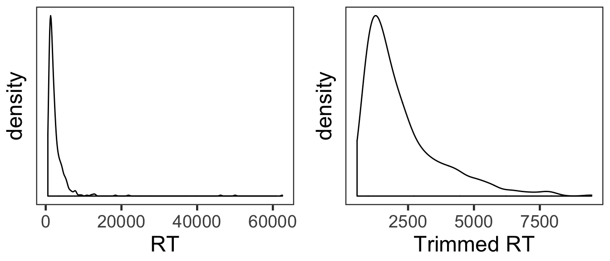
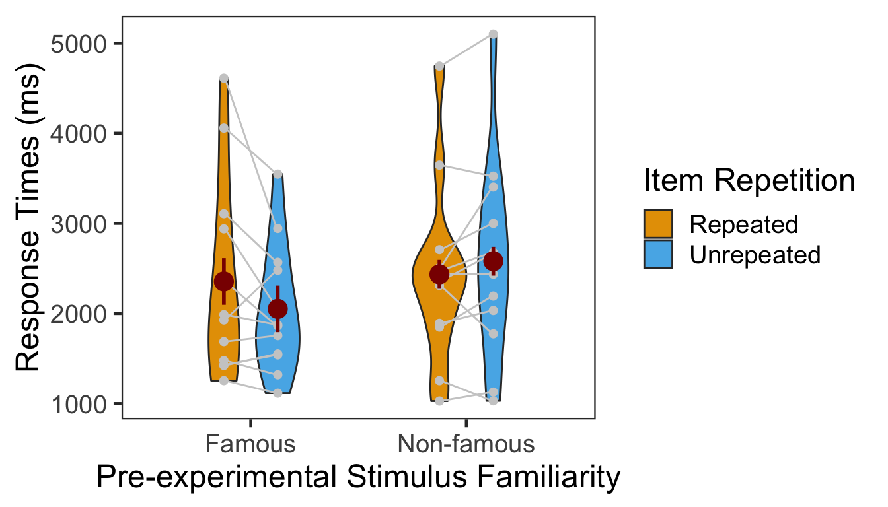

Experiment 1
Famous vs. non-famous faces (between-participants design)
Hongmi Lee, Kyungmi Kim, Do-Joon Yi
2019-03-29
set.seed(12345) # for reproducibility
options(knitr.kable.NA = '')
# Some packages need to be loaded. We use `pacman` as a package manager, which takes care of the other packages.
if (!require("pacman", quietly = TRUE)) install.packages("pacman")
if (!require("Rmisc", quietly = TRUE)) install.packages("Rmisc") # Never load it directly.
pacman::p_load(tidyverse, knitr, car, afex, emmeans, parallel, ordinal,
ggbeeswarm, cowplot, RVAideMemoire)1 Item Repetition Phase
Twenty four participants were recruited. Half of participants watched 24 famous faces while the other half watched 24 non-famous faces (between-participants factor, pre-experimental item familiarity). The faces were repeated eight times, producing 192 trials. In each trial, participants made a male/female judgment for a face.
P1 <- read.csv("data/data_FamSM_Exp1_Face_REP.csv", header = T)
P1$Familiarity = factor(P1$Familiarity, levels=c(1,2), labels=c("Famous","Non-famous"))
glimpse(P1, width=70)
## Observations: 4,608
## Variables: 9
## $ SID <int> 1, 1, 1, 1, 1, 1, 1, 1, 1, 1, 1, 1, 1, 1, 1, 1,…
## $ Familiarity <fct> Famous, Famous, Famous, Famous, Famous, Famous,…
## $ RepTime <int> 1, 1, 1, 1, 1, 1, 1, 1, 1, 1, 1, 1, 1, 1, 1, 1,…
## $ Trial <int> 1, 2, 3, 4, 5, 6, 7, 8, 9, 10, 11, 12, 13, 14, …
## $ ImgCat <int> 1, 2, 1, 2, 1, 1, 1, 2, 2, 2, 1, 2, 1, 2, 2, 1,…
## $ Resp <int> 1, 2, 1, 1, 1, 1, 1, 2, 2, 2, 1, 2, 1, 2, 2, 1,…
## $ Corr <int> 1, 1, 1, 0, 1, 1, 1, 1, 1, 1, 1, 1, 1, 1, 1, 1,…
## $ RT <dbl> 477.59, 385.10, 337.84, 354.65, 395.43, 436.21,…
## $ ImgName <fct> actor17.jpg, famfemale30.jpg, actor51.jpg, famf…
# 1. SID: participant ID
# 2. Familiarity: pre-experimental familiarity. 1 = famous, 2 = non-famous
# 3. RepTime: number of repetitions, 1~8
# 4. Trial: 1~24
# 5. ImgCat: stimulus category. male vs. female
# 6. Resp: male/female judgment, 1 = male, 2 = female, 0 = no response
# 7. Corr: correctness, 1=correct, 0 = incorrect or no response
# 8. RT: reaction times in ms.
# 9. ImgName: name of stimuli
table(P1$Familiarity, P1$SID)
##
## 1 2 3 4 5 6 7 8 9 10 11 12 13 14 15
## Famous 192 192 192 192 192 192 192 192 192 192 192 192 0 0 0
## Non-famous 0 0 0 0 0 0 0 0 0 0 0 0 192 192 192
##
## 16 17 18 19 20 21 22 23 24
## Famous 0 0 0 0 0 0 0 0 0
## Non-famous 192 192 192 192 192 192 192 192 1921.1 Accuracy
We calculated the mean and s.d. of individual participants’ mean percentage accuracy. Overall accuracy of the male/female judgment was high. The famous condition showed lower mean accuracy and more variance than the non-famous condition. In the following plot, red points and error bars represent the means and 95% CIs.
# phase 1, subject-level, long-format
P1slong <- P1 %>% group_by(SID, Familiarity) %>%
summarise(Accuracy = mean(Corr)*100) %>%
ungroup()
# summary table
P1slong %>% group_by(Familiarity) %>%
summarise(M = mean(Accuracy), SD = sd(Accuracy)) %>%
ungroup() %>%
kable()| Familiarity | M | SD |
|---|---|---|
| Famous | 98.26389 | 1.301294 |
| Non-famous | 95.31250 | 6.269698 |
# group level, needed for printing & geom_pointrange
# Rmisc must be called indirectly due to incompatibility between plyr and dplyr.
P1g <- Rmisc::summarySE(data = P1slong, measurevar = "Accuracy", groupvars = "Familiarity")
ggplot(P1slong, aes(x=Familiarity, y=Accuracy)) +
geom_violin(width = 0.5, trim=TRUE) +
ggbeeswarm::geom_quasirandom(color = "blue", size = 3, alpha = 0.2, width = 0.2) +
geom_pointrange(P1g, inherit.aes=FALSE,
mapping=aes(x = Familiarity, y=Accuracy,
ymin = Accuracy - ci, ymax = Accuracy + ci),
colour="darkred", size = 1)+
coord_cartesian(ylim = c(50, 100), clip = "on") +
labs(x = "Pre-experimental Stimulus Familiarity",
y = "Male/Female Judgment \n Accuracy (%)") +
theme_bw(base_size = 18)
1.1.1 ANOVA
Levene’s test indicated that the assumption of homogeneity of variance was not violated. Then, a one-way ANOVA showed that the difference in accuracy was not significant between famous vs. non-famous conditions.
car::leveneTest(Accuracy ~ Familiarity, P1slong)## Levene's Test for Homogeneity of Variance (center = median)
## Df F value Pr(>F)
## group 1 2.5262 0.1262
## 22p1.aov <- aov_ez(id = "SID", dv = "Accuracy", data = P1slong, between = "Familiarity")
anova(p1.aov, es = "pes") %>% kable(digits = 4)| num Df | den Df | MSE | F | pes | Pr(>F) | |
|---|---|---|---|---|---|---|
| Familiarity | 1 | 22 | 20.5012 | 2.5493 | 0.1038 | 0.1246 |
2 Item-Source Association Phase
Participants learned 48 pairs of a face and a quadrant on the screen. They were instructed to pay attention to the location of each face while making a male/female judgment. A between-participants pre-experimental item familiarity factor determined whether a participant watched famous or non-famous faces. A within-participant item repetition factor determined whether a trial presented a repeated item, which had appeared in the first phase or an unrepeated item, which appeared for the first time in the experiment.
P2 <- read.csv("data/data_FamSM_Exp1_Face_SRC.csv", header = T)
P2$Familiarity = factor(P2$Familiarity, levels=c(1,2), labels=c("Famous","Non-famous"))
P2$Repetition = factor(P2$Repetition, levels=c(1,2), labels=c("Repeated","Unrepeated"))
glimpse(P2, width=70)
## Observations: 1,152
## Variables: 10
## $ SID <int> 1, 1, 1, 1, 1, 1, 1, 1, 1, 1, 1, 1, 1, 1, 1, 1,…
## $ Familiarity <fct> Famous, Famous, Famous, Famous, Famous, Famous,…
## $ Trial <int> 1, 2, 3, 4, 5, 6, 7, 8, 9, 10, 11, 12, 13, 14, …
## $ Repetition <fct> Unrepeated, Unrepeated, Repeated, Repeated, Unr…
## $ ImgCat <int> 1, 1, 2, 1, 1, 1, 2, 2, 2, 2, 2, 2, 2, 1, 1, 2,…
## $ Loc <int> 3, 4, 3, 2, 3, 1, 2, 1, 4, 2, 3, 1, 3, 1, 1, 3,…
## $ Resp <int> 1, 1, 2, 1, 1, 1, 2, 2, 2, 2, 2, 2, 2, 1, 1, 2,…
## $ Corr <int> 1, 1, 1, 1, 1, 1, 1, 1, 1, 1, 1, 1, 1, 1, 1, 1,…
## $ RT <dbl> 1135.99, 692.29, 536.67, 789.05, 1257.40, 789.7…
## $ ImgName <fct> actor9.jpg, athlete13.jpg, famfemale01.jpg, act…
# 1. SID: participant ID
# 2. Familiarity: pre-experimental familiarity. 1 = famous, 2 = non-famous
# 3. Trial: 1~48
# 4. Repetition: 1 = repeated, 2 = unrepeated
# 5. ImgCat: stimulus category. male vs. female
# 6. Loc: location (source) of memory item; quadrants, 1~4
# 7. Resp: male/female judgment, 1 = male, 2 = female, 0 = no response
# 8. Corr: correctness, 1 = correct, 0 = incorrect or no response
# 9. RT: reaction times in ms.
# 10. ImgName: name of stimuli
table(P2$Familiarity, P2$SID)
##
## 1 2 3 4 5 6 7 8 9 10 11 12 13 14 15 16 17 18 19 20
## Famous 48 48 48 48 48 48 48 48 48 48 48 48 0 0 0 0 0 0 0 0
## Non-famous 0 0 0 0 0 0 0 0 0 0 0 0 48 48 48 48 48 48 48 48
##
## 21 22 23 24
## Famous 0 0 0 0
## Non-famous 48 48 48 48
table(P2$Repetition, P2$SID)
##
## 1 2 3 4 5 6 7 8 9 10 11 12 13 14 15 16 17 18 19 20
## Repeated 24 24 24 24 24 24 24 24 24 24 24 24 24 24 24 24 24 24 24 24
## Unrepeated 24 24 24 24 24 24 24 24 24 24 24 24 24 24 24 24 24 24 24 24
##
## 21 22 23 24
## Repeated 24 24 24 24
## Unrepeated 24 24 24 242.1 Accuracy
We calculated the mean and s.d. of individual participants’ mean percentage accuracy. The accuracy was generally high. The non-famous, unrepeated condition showed slightly lower mean accuracy than the other conditions.
# phase 2, subject-level, long-format
P2slong <- P2 %>% group_by(SID, Familiarity, Repetition) %>%
summarise(Accuracy = mean(Corr)*100) %>%
ungroup()
# summary table
P2g <- P2slong %>% group_by(Familiarity, Repetition) %>%
summarise(M = mean(Accuracy), SD = sd(Accuracy)) %>%
ungroup()
P2g %>% kable()| Familiarity | Repetition | M | SD |
|---|---|---|---|
| Famous | Repeated | 97.22222 | 3.698439 |
| Famous | Unrepeated | 98.61111 | 3.243746 |
| Non-famous | Repeated | 98.26389 | 3.751403 |
| Non-famous | Unrepeated | 94.44444 | 10.102588 |
# group level, needed for printing & geom_pointrange
# Rmisc must be called indirectly due to incompatibility between plyr and dplyr.
P2g$ci <- Rmisc::summarySEwithin(data = P2slong, measurevar = "Accuracy", idvar = "SID",
withinvars = "Repetition", betweenvars = "Familiarity")$ci
P2g$Accuracy <- P2g$M
ggplot(data=P2slong, aes(x=Familiarity, y=Accuracy, fill=Repetition)) +
geom_violin(width = 0.7, trim=TRUE) +
ggbeeswarm::geom_quasirandom(dodge.width = 0.7, color = "blue", size = 3, alpha = 0.2,
show.legend = FALSE) +
# geom_pointrange(data=P2g,
# aes(x = Familiarity, ymin = Accuracy-ci, ymax = Accuracy+ci, color = Repetition),
# position = position_dodge(0.7), color = "darkred", size = 1, show.legend = FALSE) +
coord_cartesian(ylim = c(50, 100), clip = "on") +
labs(x = "Pre-experimental Stimulus Familiarity",
y = "Male/Female Judgment \n Accuracy (%)",
fill="Item Repetition") +
scale_fill_manual(values=c("#E69F00", "#56B4E9"),
labels=c("Repeated", "Unrepeated")) +
theme_bw(base_size = 18) +
theme(panel.grid.major = element_blank(),
panel.grid.minor = element_blank()) 
2.1.1 ANOVA
Mean percentage accuracy was submitted to a 2x2 mixed design ANOVA with pre-experimental item familiarity as a between-participants factor and item repetition as a within-participant factor. Neither main effects failed to reach significance. The two-way interaction was marginally significant.
p2.aov <- aov_ez(id = "SID", dv = "Accuracy", data = P2slong,
between = "Familiarity", within = "Repetition")
anova(p2.aov, es = "pes") %>% kable(digits = 4)| num Df | den Df | MSE | F | pes | Pr(>F) | |
|---|---|---|---|---|---|---|
| Familiarity | 1 | 22 | 49.8146 | 0.5881 | 0.0260 | 0.4513 |
| Repetition | 1 | 22 | 20.3533 | 0.8708 | 0.0381 | 0.3609 |
| Familiarity:Repetition | 1 | 22 | 20.3533 | 3.9984 | 0.1538 | 0.0580 |
3 Source Memory Test Phase
In each trial, participants first indicated in which quadrant a given face appeared during the item-source association phase. Participants then rated how confident they were about their memory judgment. The design was the same as that in the second phase. There were 48 trials. Pre-experimental item familiarity was a between-participants factor. Item repetition was a within-participant factor.
P3 <- read.csv("data/data_FamSM_Exp1_Face_TST.csv", header = T)
P3$Familiarity = factor(P3$Familiarity, levels=c(1,2), labels=c("Famous","Non-famous"))
P3$Repetition = factor(P3$Repetition, levels=c(1,2), labels=c("Repeated","Unrepeated"))
glimpse(P3, width=70)
## Observations: 1,152
## Variables: 10
## $ SID <int> 1, 1, 1, 1, 1, 1, 1, 1, 1, 1, 1, 1, 1, 1, 1, 1,…
## $ Familiarity <fct> Famous, Famous, Famous, Famous, Famous, Famous,…
## $ Trial <int> 1, 2, 3, 4, 5, 6, 7, 8, 9, 10, 11, 12, 13, 14, …
## $ Repetition <fct> Repeated, Repeated, Unrepeated, Repeated, Unrep…
## $ AscLoc <int> 1, 2, 3, 3, 2, 2, 3, 4, 1, 4, 2, 4, 2, 2, 3, 4,…
## $ ScrResp <int> 1, 3, 1, 2, 3, 2, 1, 4, 1, 4, 3, 2, 2, 2, 3, 4,…
## $ Corr <int> 1, 0, 0, 0, 0, 1, 0, 1, 1, 1, 0, 0, 1, 1, 1, 1,…
## $ RT <dbl> 3065.59, 2146.18, 2411.76, 1512.09, 2817.44, 14…
## $ Confident <int> 2, 2, 3, 3, 1, 4, 4, 4, 3, 4, 1, 3, 4, 1, 4, 2,…
## $ ImgName <fct> famfemale21.jpg, athlete28.jpg, famfemale37.jpg…
# 1. SID: participant ID
# 2. Familiarity: pre-experimental familiarity. 1 = famous, 2 = non-famous
# 3. Trial: 1~48
# 4. Repetition: 1 = repeated, 2 = unrepeated
# 5. AscLoc: location (source) in which the item was presented in Phase 2; quadrants, 1~4
# 6. SrcResp: source response; quadrants, 1~4
# 7. Corr: correctness, 1=correct, 0=incorrect
# 8. RT: reaction times in ms.
# 9. Confident: confidence rating, 1~4
# 10. ImgName: name of stimuli
table(P3$Familiarity, P3$SID)
##
## 1 2 3 4 5 6 7 8 9 10 11 12 13 14 15 16 17 18 19 20
## Famous 48 48 48 48 48 48 48 48 48 48 48 48 0 0 0 0 0 0 0 0
## Non-famous 0 0 0 0 0 0 0 0 0 0 0 0 48 48 48 48 48 48 48 48
##
## 21 22 23 24
## Famous 0 0 0 0
## Non-famous 48 48 48 48
table(P3$Repetition, P3$SID)
##
## 1 2 3 4 5 6 7 8 9 10 11 12 13 14 15 16 17 18 19 20
## Repeated 24 24 24 24 24 24 24 24 24 24 24 24 24 24 24 24 24 24 24 24
## Unrepeated 24 24 24 24 24 24 24 24 24 24 24 24 24 24 24 24 24 24 24 24
##
## 21 22 23 24
## Repeated 24 24 24 24
## Unrepeated 24 24 24 243.1 Accuracy
We calculated the mean and s.d. of individual participants’ mean percentage accuracy. In the following plot, red points and error bars represent the means and 95% within-participants CIs.
# phase 3, subject-level, long-format
P3ACCslong <- P3 %>% group_by(SID, Familiarity, Repetition) %>%
summarise(Accuracy = mean(Corr)*100) %>%
ungroup()
# summary table
P3ACCg <- P3ACCslong %>% group_by(Familiarity, Repetition) %>%
summarise(M = mean(Accuracy), SD = sd(Accuracy)) %>%
ungroup()
P3ACCg %>% kable()| Familiarity | Repetition | M | SD |
|---|---|---|---|
| Famous | Repeated | 48.95833 | 17.86638 |
| Famous | Unrepeated | 65.27778 | 12.97498 |
| Non-famous | Repeated | 43.75000 | 14.70458 |
| Non-famous | Unrepeated | 34.72222 | 13.45275 |
# marginal means of famous vs. non-famous conditions.
P3ACCslong %>% group_by(Familiarity) %>%
summarise(M = mean(Accuracy), SD = sd(Accuracy)) %>%
ungroup() %>% kable()| Familiarity | M | SD |
|---|---|---|
| Famous | 57.11806 | 17.39700 |
| Non-famous | 39.23611 | 14.53365 |
# marginal means of repeated vs. unrepeated conditions.
P3ACCslong %>% group_by(Repetition) %>%
summarise(M = mean(Accuracy), SD = sd(Accuracy)) %>%
ungroup() %>% kable()| Repetition | M | SD |
|---|---|---|
| Repeated | 46.35417 | 16.22199 |
| Unrepeated | 50.00000 | 20.26396 |
# wide format, needed for geom_segments.
P3ACCswide <- P3ACCslong %>% spread(key = Repetition, value = Accuracy)
# group level, needed for printing & geom_pointrange
# Rmisc must be called indirectly due to incompatibility between plyr and dplyr.
P3ACCg$ci <- Rmisc::summarySEwithin(data = P3ACCslong, measurevar = "Accuracy", idvar = "SID",
withinvars = "Repetition", betweenvars = "Familiarity")$ci
P3ACCg$Accuracy <- P3ACCg$M
ggplot(data=P3ACCslong, aes(x=Familiarity, y=Accuracy, fill=Repetition)) +
geom_violin(width = 0.5, trim=TRUE) +
geom_point(position=position_dodge(0.5), color="gray80", size=1.8, show.legend = FALSE) +
geom_segment(data=filter(P3ACCswide, Familiarity=="Famous"), inherit.aes = FALSE,
aes(x=1-.12, y=filter(P3ACCswide, Familiarity=="Famous")$Repeated,
xend=1+.12, yend=filter(P3ACCswide, Familiarity=="Famous")$Unrepeated),
color="gray80") +
geom_segment(data=filter(P3ACCswide, Familiarity=="Non-famous"), inherit.aes = FALSE,
aes(x=2-.12, y=filter(P3ACCswide, Familiarity=="Non-famous")$Repeated,
xend=2+.12, yend=filter(P3ACCswide, Familiarity=="Non-famous")$Unrepeated),
color="gray80") +
geom_pointrange(data=P3ACCg,
aes(x = Familiarity, ymin = Accuracy-ci, ymax = Accuracy+ci, group = Repetition),
position = position_dodge(0.5), color = "darkred", size = 1, show.legend = FALSE) +
scale_fill_manual(values=c("#E69F00", "#56B4E9"),
labels=c("Repeated", "Unrepeated")) +
labs(x = "Pre-experimental Stimulus Familiarity",
y = "Source Memory Accuracy (%)",
fill='Item Repetition') +
coord_cartesian(ylim = c(0, 100), clip = "on") +
theme_bw(base_size = 18) +
theme(panel.grid.major = element_blank(),
panel.grid.minor = element_blank()) 
The effect of item repetition depended on the pre-experimental familiarity of the items. For famous faces, the source of unrepeated items was better remembered (novelty benefit). For non-famous faces, the source of repeated items was better remembered (familiarity benefit). These crossed effects were on top of the general familiarity benefit, in which source memory was more accurate for famous faces than for non-famous faces.
3.1.1 ANOVA
Mean percentage accuracy was submitted to a 2x2 mixed design ANOVA with pre-experimental item familiarity as a between-participants factor (famous vs. non-famous) and item repetition as a within-participant factor (repeated vs. unrepeated).
p3.corr.aov <- aov_ez(id = "SID", dv = "Accuracy", data = P3ACCslong,
between = "Familiarity", within = "Repetition")
anova(p3.corr.aov, es = "pes") %>% kable(digits = 4)| num Df | den Df | MSE | F | pes | Pr(>F) | |
|---|---|---|---|---|---|---|
| Familiarity | 1 | 22 | 358.5004 | 10.7034 | 0.3273 | 0.0035 |
| Repetition | 1 | 22 | 83.8792 | 1.9016 | 0.0796 | 0.1818 |
| Familiarity:Repetition | 1 | 22 | 83.8792 | 22.9788 | 0.5109 | 0.0001 |
The main effect of pre-experimental item familiarity and the two-way interaction were significant. Additionally, we performed two separate one-way repeated-measures ANOVAs as post-hoc analyses. In the following two tables, the first presents the effect of item repetition for famous faces, and the second presents the same effect for non-famous faces.
ci95 <- P3ACCswide %>% filter(Familiarity=="Famous") %>%
mutate(Diff = Unrepeated - Repeated) %>%
summarise(lower = mean(Diff) - qt(0.975,df=n()-1)*sd(Diff)/sqrt(n()),
upper = mean(Diff) + qt(0.975,df=n()-1)*sd(Diff)/sqrt(n()))
p3.corr.aov.r1 <- aov_ez(id = "SID", dv = "Accuracy", within = "Repetition",
data = filter(P3ACCslong, Familiarity == "Famous"))
anova(p3.corr.aov.r1, es = "pes") %>% kable(digits = 4)| num Df | den Df | MSE | F | pes | Pr(>F) | |
|---|---|---|---|---|---|---|
| Repetition | 1 | 11 | 78.0592 | 20.4709 | 0.6505 | 9e-04 |
In the famous face group, source memory was more accurate for unrepeated than repeated faces. The 95% CI of difference between the means was [8.38, 24.26].
ci95 <- P3ACCswide %>% filter(Familiarity=="Non-famous") %>%
mutate(Diff = Repeated - Unrepeated) %>%
summarise(lower = mean(Diff) - qt(0.975,df=n()-1)*sd(Diff)/sqrt(n()),
upper = mean(Diff) + qt(0.975,df=n()-1)*sd(Diff)/sqrt(n()))
p3.corr.aov.r2 <- aov_ez(id = "SID", dv = "Accuracy", within = "Repetition",
data = filter(P3ACCslong, Familiarity == "Non-famous"))
anova(p3.corr.aov.r2, es = "pes") %>% kable(digits = 4)| num Df | den Df | MSE | F | pes | Pr(>F) | |
|---|---|---|---|---|---|---|
| Repetition | 1 | 11 | 89.6991 | 5.4516 | 0.3314 | 0.0395 |
In the non-famous face group, source memory was more accurate for repeated than unrepeated faces. The 95% CI of difference between the means was [0.52, 17.54].
3.1.2 GLMM
To supplement conventional ANOVAs, we tested generalized linear mixed models (GLMM) on source memory accuracy. This mixed modeling approach with a binomial link function is expected to properly handle binary data such as source memory responses (i.e., correct or not; Jaeger, 2008).
We built the full model (full1) with two fixed effects (pre-experimental item familiarity and item repetition) and their interaction. The model also included maximal random effects structure (Barr, Levy, Scheepers, & Tily, 2013): both by-participant and by-item random intercepts, and by-participant random slopes for item repetition. In case the maximal model does not converge successfully, we built another model (full2) with the maximal random structure but with the correlations among the random terms removed (Singmann, 2018).
To fit the models, we used the mixed() of the afex package (Singmann, Bolker, & Westfall, 2017) which was built on the lmer() of the lme4 package (Bates, Maechler, Bolker, & Walker, 2015). The mixed() assessed the statistical significance of fixed effects by comparing a model with the effect in question against its nested model which lacked the effect in question. P-values of the effects were obtained by likelihood ratio tests (LRT).
(nc <- detectCores())
cl <- makeCluster(rep("localhost", nc))
full1 <- afex::mixed(Corr ~ Familiarity*Repetition + (Repetition|SID) + (1|ImgName),
P3, method = "LRT", cl = cl,
family=binomial(link="logit"),
control = glmerControl(optCtrl = list(maxfun = 1e6)))
full2 <- afex::mixed(Corr ~ Familiarity*Repetition + (Repetition||SID) + (1|ImgName),
P3, method = "LRT", cl = cl,
family=binomial(link="logit"),
control = glmerControl(optCtrl = list(maxfun = 1e6)), expand_re = TRUE)
stopCluster(cl)The table below presents the LRT results of the models full1 and full2.
full.compare <- cbind(afex::nice(full1), afex::nice(full2)[,-c(1,2)])
colnames(full.compare)[c(3,4,5,6)] <- c("full1 Chisq", "p","full2 Chisq", "p")
full.compare %>% kable()| Effect | df | full1 Chisq | p | full2 Chisq | p |
|---|---|---|---|---|---|
| Familiarity | 1 | 8.74 ** | .003 | 8.81 ** | .003 |
| Repetition | 1 | 1.49 | .22 | 1.56 | .21 |
| Familiarity:Repetition | 1 | 16.22 *** | <.0001 | 17.48 *** | <.0001 |
The p-values from both models agreed strongly providing a high degree of confidence in the results. Now we proceeded to the post-hoc analyses. As in the following table, the results from the pairwise comparisons were consistent with those based on the ANOVA. Item repetition impaired source memory of famous faces whereas it improved source memory of non-famous faces.
emmeans(full1, pairwise ~ Repetition | Familiarity, type = "response")$contrasts %>% kable()| contrast | Familiarity | odds.ratio | SE | df | z.ratio | p.value |
|---|---|---|---|---|---|---|
| Repeated / Unrepeated | Famous | 0.4826584 | 0.0884641 | Inf | -3.974386 | 0.0000706 |
| Repeated / Unrepeated | Non-famous | 1.5113764 | 0.2759630 | Inf | 2.262005 | 0.0236971 |
3.2 Confidence
The following table presents the mean and s.d. of individual participants’ confidence ratings in each condition. The pattern of confidence ratings was qualitatively identical to those from accuracy analysis; we observed the novelty benefit with famous faces and the familiarity benefit with non-famous faces. In the following plot, red points and error bars represent the means and 95% within-participants CIs.
P3CFslong <- P3 %>% group_by(SID, Familiarity, Repetition) %>%
summarise(Confidence = mean(Confident)) %>%
ungroup()
P3CFg <- P3CFslong %>%
group_by(Familiarity, Repetition) %>%
summarise(M = mean(Confidence), SD = sd(Confidence)) %>%
ungroup()
P3CFg %>% kable()| Familiarity | Repetition | M | SD |
|---|---|---|---|
| Famous | Repeated | 2.437500 | 0.4555702 |
| Famous | Unrepeated | 2.826389 | 0.4085703 |
| Non-famous | Repeated | 2.625000 | 0.5047126 |
| Non-famous | Unrepeated | 2.083333 | 0.4660169 |
# marginal means of famous vs. non-famous conditions.
P3CFslong %>% group_by(Familiarity) %>%
summarise(M = mean(Confidence), SD = sd(Confidence)) %>%
ungroup() %>% kable()| Familiarity | M | SD |
|---|---|---|
| Famous | 2.631944 | 0.4674919 |
| Non-famous | 2.354167 | 0.5497584 |
# marginal means of repeated vs. unrepeated conditions.
P3CFslong %>% group_by(Repetition) %>%
summarise(M = mean(Confidence), SD = sd(Confidence)) %>%
ungroup() %>% kable()| Repetition | M | SD |
|---|---|---|
| Repeated | 2.531250 | 0.4798554 |
| Unrepeated | 2.454861 | 0.5724814 |
# wide format, needed for geom_segments.
P3CFswide <- P3CFslong %>% spread(key = Repetition, value = Confidence)
# group level, needed for printing & geom_pointrange
# Rmisc must be called indirectly due to incompatibility between plyr and dplyr.
P3CFg$ci <- Rmisc::summarySEwithin(data = P3CFslong, measurevar = "Confidence", idvar = "SID",
withinvars = "Repetition", betweenvars = "Familiarity")$ci
P3CFg$Confidence <- P3CFg$M
ggplot(data=P3CFslong, aes(x=Familiarity, y=Confidence, fill=Repetition)) +
geom_violin(width = 0.5, trim=TRUE) +
geom_point(position=position_dodge(0.5), color="gray80", size=1.8, show.legend = FALSE) +
geom_segment(data=filter(P3CFswide, Familiarity=="Famous"), inherit.aes = FALSE,
aes(x=1-.12, y=filter(P3CFswide, Familiarity=="Famous")$Repeated,
xend=1+.12, yend=filter(P3CFswide, Familiarity=="Famous")$Unrepeated),
color="gray80") +
geom_segment(data=filter(P3CFswide, Familiarity=="Non-famous"), inherit.aes = FALSE,
aes(x=2-.12, y=filter(P3CFswide, Familiarity=="Non-famous")$Repeated,
xend=2+.12, yend=filter(P3CFswide, Familiarity=="Non-famous")$Unrepeated),
color="gray80") +
geom_pointrange(data=P3CFg,
aes(x = Familiarity, ymin = Confidence-ci, ymax = Confidence+ci, group = Repetition),
position = position_dodge(0.5), color = "darkred", size = 1, show.legend = FALSE) +
scale_fill_manual(values=c("#E69F00", "#56B4E9"),
labels=c("Repeated", "Unrepeated")) +
labs(x = "Pre-experimental Stimulus Familiarity",
y = "Source Memory Confidence",
fill='Item Repetition') +
coord_cartesian(ylim = c(1, 4), clip = "on") +
theme_bw(base_size = 18) +
theme(panel.grid.major = element_blank(),
panel.grid.minor = element_blank())
3.2.1 ANOVA
Individuals’ mean confidence ratings were submitted to a 2x2 mixed design ANOVA with pre-experimental item familiarity as a between-participants factor and item repetition as a within-participant factor.
p3.conf.aov <- aov_ez(id = "SID", dv = "Confidence", data = P3CFslong,
between = "Familiarity", within = "Repetition")
anova(p3.conf.aov, es = "pes") %>% kable(digits = 4)| num Df | den Df | MSE | F | pes | Pr(>F) | |
|---|---|---|---|---|---|---|
| Familiarity | 1 | 22 | 0.3322 | 2.7875 | 0.1125 | 0.1092 |
| Repetition | 1 | 22 | 0.0910 | 0.7694 | 0.0338 | 0.3899 |
| Familiarity:Repetition | 1 | 22 | 0.0910 | 28.5428 | 0.5647 | 0.0000 |
The two-way interaction was significant while neither main effects reached significance. Next we performed two additional one-way repeated-measures ANOVAs as post-hoc analyses. The first table below presents the effect of item repetition for famous faces, and the second presents the same effect for non-famous faces.
ci95 <- P3CFswide %>% filter(Familiarity=="Famous") %>%
mutate(Diff = Unrepeated - Repeated) %>%
summarise(lower = mean(Diff) - qt(0.975,df=n()-1)*sd(Diff)/sqrt(n()),
upper = mean(Diff) + qt(0.975,df=n()-1)*sd(Diff)/sqrt(n()))
p3.conf.aov.r1 <- aov_ez(id = "SID", dv = "Confidence", within = "Repetition",
data = filter(P3CFslong, Familiarity == "Famous"))
anova(p3.conf.aov.r1, es = "pes") %>% kable(digits = 4)| num Df | den Df | MSE | F | pes | Pr(>F) | |
|---|---|---|---|---|---|---|
| Repetition | 1 | 11 | 0.0555 | 16.3643 | 0.598 | 0.0019 |
In the famous face group, confidence ratings were higher for unrepeated than repeated faces. The 95% CI of difference between the means was [0.18, 0.6].
ci95 <- P3CFswide %>% filter(Familiarity=="Non-famous") %>%
mutate(Diff = Repeated - Unrepeated) %>%
summarise(lower = mean(Diff) - qt(0.975,df=n()-1)*sd(Diff)/sqrt(n()),
upper = mean(Diff) + qt(0.975,df=n()-1)*sd(Diff)/sqrt(n()))
p3.conf.aov.r2 <- aov_ez(id = "SID", dv = "Confidence", within = "Repetition",
data = filter(P3CFslong, Familiarity == "Non-famous"))
anova(p3.conf.aov.r2, es = "pes") %>% kable(digits = 4)| num Df | den Df | MSE | F | pes | Pr(>F) | |
|---|---|---|---|---|---|---|
| Repetition | 1 | 11 | 0.1266 | 13.9077 | 0.5584 | 0.0033 |
In the non-famous face group, confidence ratings were higher for repeated than unrepeated faces. The 95% CI of difference between the means was [0.22, 0.86].
3.2.2 CLMM
The responses from a Likert-type scale are ordinal. Especially for the rating items with numerical response formats containing four or fewer categories, it is recommended to use categorical data analysis approaches, rather than treating the responses as continuous data (Harpe, 2015).
Here we employed the cumulative link mixed modeling (CLMM) using the clmm() of the package ordinal (Christensen, submitted). The specification of the full model was the same as the mixed() above. To determine the statistical significance, the LRT compared models with or without the fixed effect of interest.
P3R <- P3
P3R$Confident = factor(P3R$Confident, ordered = TRUE)
P3R$SID = factor(P3R$SID)
cm.full <- clmm(Confident ~ Familiarity * Repetition + (Repetition|SID) + (1|ImgName), data=P3R)
cm.red1 <- clmm(Confident ~ Familiarity + Repetition + (Repetition|SID) + (1|ImgName), data=P3R)
cm.red2 <- clmm(Confident ~ Repetition + (Repetition|SID) + (1|ImgName), data=P3R)
cm.red3 <- clmm(Confident ~ 1 + (Repetition|SID) + (1|ImgName), data=P3R) cm.comp <- anova(cm.full, cm.red1, cm.red2, cm.red3)
data.frame(Effect = c("Familiarity", "Repetition", "Familiarity:Repetition"),
df = 1, Chisq = cm.comp$LR.stat[2:4], p = cm.comp$`Pr(>Chisq)`[2:4]) %>% kable()| Effect | df | Chisq | p |
|---|---|---|---|
| Familiarity | 1 | 0.4489511 | 0.5028335 |
| Repetition | 1 | 0.8270370 | 0.3631307 |
| Familiarity:Repetition | 1 | 19.3723293 | 0.0000108 |
The LRT revealed a significant two-way interaction. Neither main effects were significant. Next we performed pairwise comparisons as post-hoc analyses. As shown in the following table, the results of the pairwise comparisons were consistent with those from the ANOVA approach.
emmeans(cm.full, pairwise ~ Repetition | Familiarity)$contrasts %>% kable()| contrast | Familiarity | estimate | SE | df | z.ratio | p.value |
|---|---|---|---|---|---|---|
| Repeated - Unrepeated | Famous | -0.7610445 | 0.2402659 | Inf | -3.16751 | 0.0015375 |
| Repeated - Unrepeated | Non-famous | 1.0914876 | 0.2384801 | Inf | 4.57685 | 0.0000047 |
Below is the plot of estimated marginal means, which were extracted from the fitted CLMM. The estimated distribution of confidence ratings evidently represents the interaction between item repetition and pre-experimental item repetition.
temp <- emmeans(cm.full,~Familiarity:Repetition|cut, mode="linear.predictor")
temp <- rating.emmeans(temp)
temp <- temp %>% unite(Condition, c("Familiarity", "Repetition"))
ggplot(data = temp, aes(x = Rating, y = Prob, group = Condition)) +
geom_line(aes(color = Condition), size = 1.2) +
geom_point(aes(shape = Condition, color = Condition), size = 4, fill = "white", stroke = 1.2) +
scale_color_manual(values=c("#E69F00", "#E69F00", "#56B4E9", "#56B4E9")) +
scale_shape_manual(name="Condition", values=c(21,24,21,24)) +
labs(y = "Response Probability", x = "Rating") +
expand_limits(y=0) +
scale_y_continuous(limits = c(0, 0.4)) +
scale_x_discrete(labels = c("1" = "1(Guessed)","4"="4(Sure)")) +
theme_minimal() +
theme(text = element_text(size=18))
ww.conf.t.r1 <- t.test(Confidence ~ Repetition, filter(P3CFslong, Familiarity == "Famous"), paired = TRUE)
sort(abs(ww.conf.t.r1$conf.int))[1:2] # 95% CI of difference between means
## [1] 0.1772996 0.6004781
ww.conf.t.r2 <- t.test(Confidence ~ Repetition, filter(P3CFslong, Familiarity == "Non-famous"), paired = TRUE)
sort(abs(ww.conf.t.r2$conf.int))[1:2] # 95% CI of difference between means
## [1] 0.2219825 0.86135083.3 RT
Only RTs in correct trials were analyzed. Before analysis, we first removed RTs either shorter than 200ms or longer than 10s. Then, from the RT distribution of each condition, RTs beyond 3 s.d. from the mean were removed.
cP3 <- P3 %>% filter(Corr==1)
sP3 <- cP3 %>% filter(RT > 200 & RT < 10000) %>%
group_by(SID) %>%
nest() %>%
mutate(lbound = map(data, ~mean(.$RT)-3*sd(.$RT)),
ubound = map(data, ~mean(.$RT)+3*sd(.$RT))) %>%
unnest(lbound, ubound) %>%
unnest(data) %>%
ungroup() %>%
mutate(Outlier = (RT < lbound)|(RT > ubound)) %>%
filter(Outlier == FALSE) %>%
select(SID, Familiarity, Repetition, RT, ImgName)
100 - 100*nrow(sP3)/nrow(cP3)
## [1] 2.882883This trimming procedure removed 2.88% of correct RTs.
Since the overall accuracy of source memory was not high, only small numbers of correct trials were available after trimming. The following table summarizes the numbers of RTs submitted to subsequent analyses. None of participants had more than 25 trials per condition. In the non-famous conditions, half participants had less than 10 valid trials.
sP3 %>% group_by(SID, Familiarity, Repetition) %>%
summarise(NumTrial = length(RT)) %>%
ungroup %>%
group_by(Familiarity, Repetition) %>%
summarise(Avg = mean(NumTrial),
Med = median(NumTrial),
Min = min(NumTrial),
Max = max(NumTrial)) %>%
ungroup %>%
kable()| Familiarity | Repetition | Avg | Med | Min | Max |
|---|---|---|---|---|---|
| Famous | Repeated | 11.583333 | 12.0 | 4 | 19 |
| Famous | Unrepeated | 15.083333 | 14.5 | 11 | 21 |
| Non-famous | Repeated | 10.333333 | 9.5 | 6 | 15 |
| Non-famous | Unrepeated | 7.916667 | 7.5 | 3 | 15 |
h1 <- ggplot(cP3, aes(x=RT)) + geom_density()
h2 <- ggplot(sP3, aes(x=RT)) + geom_density() + labs(x = "Trimmed RT")
plot_grid(h1, h2)
The overall RT distribution was highly skewed even after trimming. Given limited numbers of RTs and its skewed distribution, any results from the current RT analyses should be interpreted with caution and preferably corroborated with other measures.
We calculated the mean and s.d. of individual participants’ mean RTs. The numerical pattern of RTs across the conditions was consistent with the accuracy and confidence data. In the following plot, red points and error bars represent the means and 95% within-participants CIs.
P3RTslong <- sP3 %>% group_by(SID, Familiarity, Repetition) %>%
summarise(RT = mean(RT)) %>%
ungroup()
P3RTg <- P3RTslong %>% group_by(Familiarity, Repetition) %>%
summarise(M = mean(RT), SD = sd(RT)) %>%
ungroup()
P3RTg %>% kable()| Familiarity | Repetition | M | SD |
|---|---|---|---|
| Famous | Repeated | 2355.159 | 1102.2211 |
| Famous | Unrepeated | 2051.237 | 710.7829 |
| Non-famous | Repeated | 2434.308 | 996.1972 |
| Non-famous | Unrepeated | 2580.130 | 1117.5506 |
# wide format, needed for geom_segments.
P3RTswide <- P3RTslong %>% spread(key = Repetition, value = RT)
# group level, needed for printing & geom_pointrange
# Rmisc must be called indirectly due to incompatibility between plyr and dplyr.
P3RTg$ci <- Rmisc::summarySEwithin(data = P3RTslong, measurevar = "RT", idvar = "SID",
withinvars = "Repetition", betweenvars = "Familiarity")$ci
P3RTg$RT <- P3RTg$M
ggplot(data=P3RTslong, aes(x=Familiarity, y=RT, fill=Repetition)) +
geom_violin(width = 0.5, trim=TRUE) +
geom_point(position=position_dodge(0.5), color="gray80", size=1.8, show.legend = FALSE) +
geom_segment(data=filter(P3RTswide, Familiarity=="Famous"), inherit.aes = FALSE,
aes(x=1-.12, y=filter(P3RTswide, Familiarity=="Famous")$Repeated,
xend=1+.12, yend=filter(P3RTswide, Familiarity=="Famous")$Unrepeated),
color="gray80") +
geom_segment(data=filter(P3RTswide, Familiarity=="Non-famous"), inherit.aes = FALSE,
aes(x=2-.12, y=filter(P3RTswide, Familiarity=="Non-famous")$Repeated,
xend=2+.12, yend=filter(P3RTswide, Familiarity=="Non-famous")$Unrepeated),
color="gray80") +
geom_pointrange(data=P3RTg,
aes(x = Familiarity, ymin = RT-ci, ymax = RT+ci, group = Repetition),
position = position_dodge(0.5), color = "darkred", size = 1, show.legend = FALSE) +
scale_fill_manual(values=c("#E69F00", "#56B4E9"),
labels=c("Repeated", "Unrepeated")) +
labs(x = "Pre-experimental Stimulus Familiarity",
y = "Response Times (ms)",
fill='Item Repetition') +
theme_bw(base_size = 18) +
theme(panel.grid.major = element_blank(),
panel.grid.minor = element_blank())
3.3.1 ANOVA
Individuals’ mean RTs were submitted to a 2x2 mixed design ANOVA with pre-experimental item familiarity as a between-participants factor and item repetition as a within-participant factor.1
p3.rt.aov <- aov_ez(id = "SID", dv = "RT", data = sP3,
between = "Familiarity", within = "Repetition")
anova(p3.rt.aov, es = "pes") %>% kable(digits = 4)| num Df | den Df | MSE | F | pes | Pr(>F) | |
|---|---|---|---|---|---|---|
| Familiarity | 1 | 22 | 1866257.4 | 0.5943 | 0.0263 | 0.4490 |
| Repetition | 1 | 22 | 114458.6 | 0.6551 | 0.0289 | 0.4269 |
| Familiarity:Repetition | 1 | 22 | 114458.6 | 5.3016 | 0.1942 | 0.0311 |
The two-way interaction was significant. We then proceeded to post-hoc analyses with two one-way repeated-measures ANOVAs. The first table below presents the effect of item repetition for famous faces, and the second table presents the same effect for non-famous faces.
p3.rt.aov.r1 <- aov_ez(id = "SID", dv = "RT", within = "Repetition",
data = filter(sP3, Familiarity == "Famous"))
anova(p3.rt.aov.r1, es = "pes") %>% kable(digits = 4)| num Df | den Df | MSE | F | pes | Pr(>F) | |
|---|---|---|---|---|---|---|
| Repetition | 1 | 11 | 165604.1 | 3.3466 | 0.2333 | 0.0946 |
The difference was not significant in the famous condition.
p3.rt.aov.r2 <- aov_ez(id = "SID", dv = "RT", within = "Repetition",
data = filter(sP3, Familiarity == "Non-famous"))
anova(p3.rt.aov.r2, es = "pes") %>% kable(digits = 4)| num Df | den Df | MSE | F | pes | Pr(>F) | |
|---|---|---|---|---|---|---|
| Repetition | 1 | 11 | 63313.16 | 2.0151 | 0.1548 | 0.1835 |
The difference was not significant in the non-famous condition, either.
4 Session Info
sessionInfo()
## R version 3.5.2 (2018-12-20)
## Platform: x86_64-apple-darwin15.6.0 (64-bit)
## Running under: macOS High Sierra 10.13.6
##
## Matrix products: default
## BLAS: /Library/Frameworks/R.framework/Versions/3.5/Resources/lib/libRblas.0.dylib
## LAPACK: /Library/Frameworks/R.framework/Versions/3.5/Resources/lib/libRlapack.dylib
##
## locale:
## [1] en_US.UTF-8/en_US.UTF-8/en_US.UTF-8/C/en_US.UTF-8/en_US.UTF-8
##
## attached base packages:
## [1] parallel stats graphics grDevices utils datasets methods
## [8] base
##
## other attached packages:
## [1] RVAideMemoire_0.9-73 cowplot_0.9.4 ggbeeswarm_0.6.0
## [4] ordinal_2019.3-9 emmeans_1.3.3 afex_0.23-0
## [7] lme4_1.1-21 Matrix_1.2-17 car_3.0-2
## [10] carData_3.0-2 knitr_1.22 forcats_0.4.0
## [13] stringr_1.4.0 dplyr_0.8.0.1 purrr_0.3.2
## [16] readr_1.3.1 tidyr_0.8.3 tibble_2.1.1
## [19] ggplot2_3.1.0 tidyverse_1.2.1 Rmisc_1.5
## [22] plyr_1.8.4 lattice_0.20-38 pacman_0.5.1
##
## loaded via a namespace (and not attached):
## [1] nlme_3.1-137 lubridate_1.7.4 httr_1.4.0
## [4] numDeriv_2016.8-1 tools_3.5.2 backports_1.1.3
## [7] utf8_1.1.4 R6_2.4.0 vipor_0.4.5
## [10] lazyeval_0.2.2 colorspace_1.4-1 withr_2.1.2
## [13] tidyselect_0.2.5 curl_3.3 compiler_3.5.2
## [16] cli_1.1.0 rvest_0.3.2 xml2_1.2.0
## [19] sandwich_2.5-0 labeling_0.3 scales_1.0.0
## [22] mvtnorm_1.0-10 digest_0.6.18 foreign_0.8-71
## [25] minqa_1.2.4 rmarkdown_1.12 rio_0.5.16
## [28] pkgconfig_2.0.2 htmltools_0.3.6 highr_0.8
## [31] rlang_0.3.2 readxl_1.3.1 rstudioapi_0.10
## [34] generics_0.0.2 zoo_1.8-5 jsonlite_1.6
## [37] zip_2.0.1 magrittr_1.5 Rcpp_1.0.1
## [40] munsell_0.5.0 fansi_0.4.0 abind_1.4-5
## [43] ucminf_1.1-4 stringi_1.4.3 multcomp_1.4-10
## [46] yaml_2.2.0 MASS_7.3-51.1 grid_3.5.2
## [49] crayon_1.3.4 haven_2.1.0 splines_3.5.2
## [52] hms_0.4.2 pillar_1.3.1 boot_1.3-20
## [55] estimability_1.3 reshape2_1.4.3 codetools_0.2-16
## [58] glue_1.3.1 evaluate_0.13 data.table_1.12.0
## [61] modelr_0.1.4 nloptr_1.2.1 cellranger_1.1.0
## [64] gtable_0.3.0 assertthat_0.2.1 xfun_0.5
## [67] openxlsx_4.1.0 xtable_1.8-3 broom_0.5.1
## [70] coda_0.19-2 survival_2.43-3 lmerTest_3.1-0
## [73] beeswarm_0.2.3 TH.data_1.0-10We additionally tested several GLMMs on source memory RTs since GLMMs with relevant link functions were supposed to be better than the conventional ANOVA in dealing with such limited, unbalanced and skewed data as the current RTs (Lo & Andrews, 2015). Some models adopted non-linear transformations of RTs (such as -1000/RT or log(RT)) and others assumed an inverse Gaussian or Gamma distribution and a linear relationship (identity link function) between the predictors and RTs. None of the models, however, converged onto a stable solution.↩